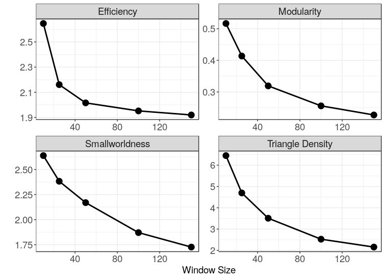

More spurious modular structure in functional brain networks
By Corson N. Areshenkoff
January 16, 2019
Even in the absence of any true underlying network structure, functional brain networks can easily show complex, modular structure, possibly due to a combination of the transitive-ish properties of most functional connectivity measures, and the standard approaches to fMRI preprocessing (esp. low pass filtering)
Assessment of dynamic functional connectivity usually involves estimating functional connectivity within a temporal sliding window, which requires the arbitrary selection of a window size. As with low-pass filtering, a small window length reduces the precision of the functional connectivity estimate by reducing the effective sample size, which should similarly result in greater modular structure.
This time, we’ll use real fMRI data consisting of an atlas of 175 regions recorded for a duration of 150 TRs. To ensure that there is no true underlying modular structure, I’ve randomly selected each of the 175 signals from different ROIs from different subjects during different scans (resting state vs. various tasks), and reversed half of the signals in time. We then construct correlation networks at window lengths of 10, 25, 50, 100, and 150 TRs by thresholding the sample correlation matrix at positive significant values using a t-test with an uncorrected threshold of \(\alpha = .05\).
As we know, t-tests for correlations are wildly miscalibrated when applied to fMRI time series, and this problem is especially severe at short window lengths. Take the figure below, which shows a pair of signals (left) and the distribution of pairwise sample correlations (right) at each window length.

Notice the increased prevalence of extreme correlations at smaller window lengths – the result of the near linearity of the signals within the window. For all the reasons discussed in the previous post, we would expect this to result in increased modular structure at shorter window lengths. Sure enough, short window lengths result in extremely modular, efficient, small-world networks, even in the absence of any real underlying network structure.

- Posted on:
- January 16, 2019
- Length:
- 2 minute read, 313 words
- See Also: